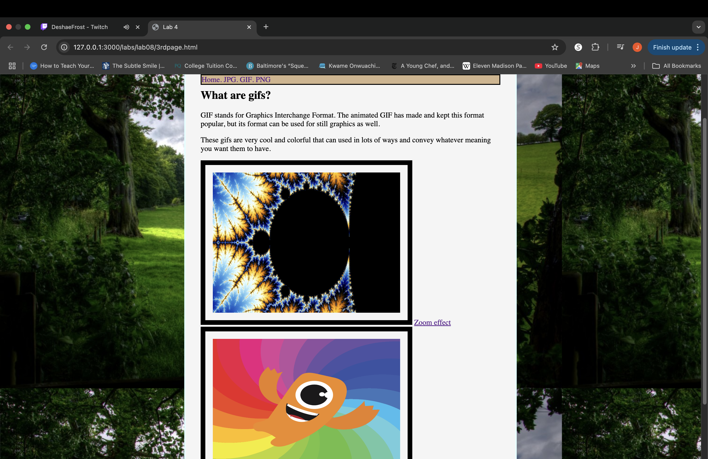
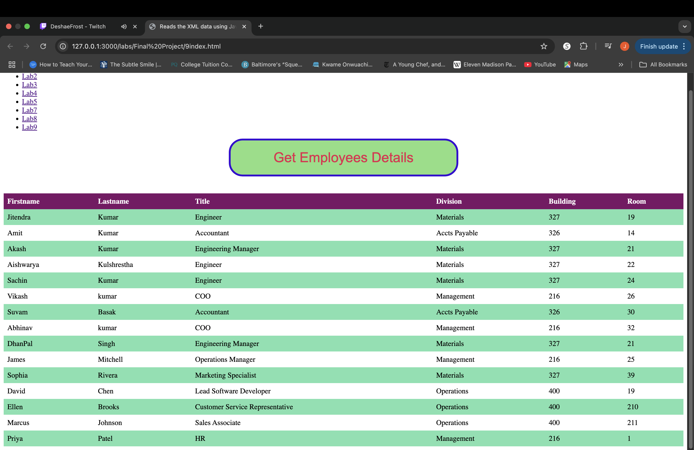

Final Project Portfolio 3
Published on December 8, 2024 by Josh W.
In Part 3 you can explore labs 8 and 9. Each image is a clickable link to the lab's webpage, click each image to explore it's page. The third image takes you into a deeper dive of my other labs.
-

-

Lab9. Incorporating Javiscript by creating a interactive button on a webpage.
lab8. Background Images using CSS.